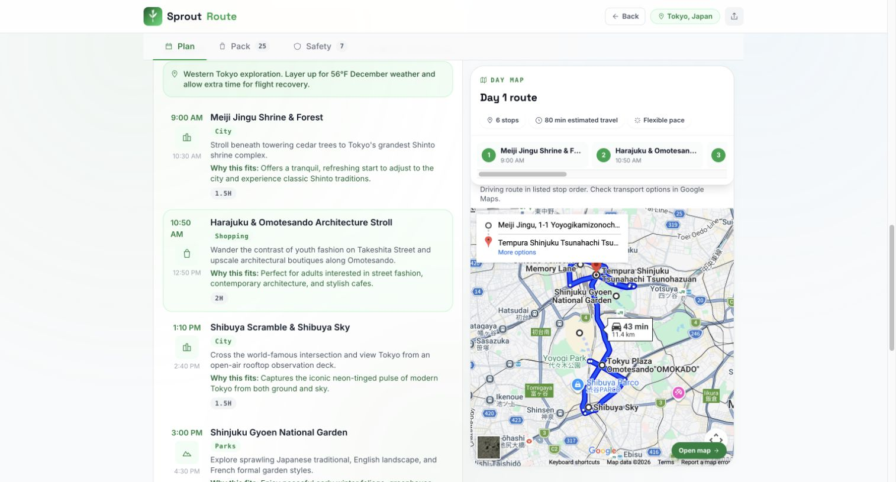
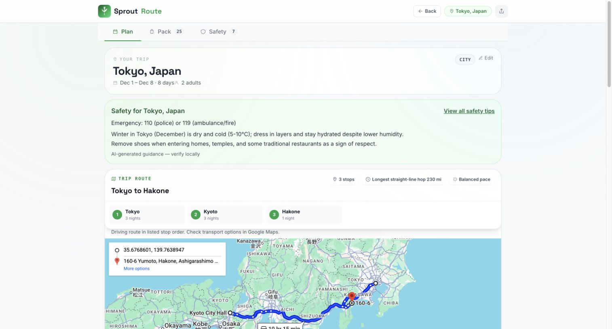

Two city plans can run at once. Packing starts independently, and safety starts when destination context is available.
Independent product / live web app / family travel
SproutRoute
I designed, built, and operate a travel planner that brings a day-by-day itinerary, route maps, packing, and location-specific safety guidance into one place. Travelers describe the trip in plain language, review the stops, and prepare for each day.
Live web productVerified September 9, 2026
- Customer
- Traveling families
- Scope
- Idea to live product
- Trip support
- Single or multiple cities
- Core choice
- AI plus rules and APIs
- Decision
- Use AI for itinerary suggestions, rules for packing, and dedicated services for weather, place details, and map directions.
- Why
- A useful trip plan needs clear loading states, recoverable failures, and an honest distinction between suggestions and sourced information.
- Result
- An eight-day, three-city Japan trip completed in 25.0 seconds in a production check. Packing and safety appeared while the itinerary was still generating.
Product decisionsPlanning and preparation
Keep the useful details with the plan.
Families need more than a list of attractions. I built the flow around the decisions they make next: which cities to visit, how to move between the day’s stops, what to pack, and what to check before leaving. The planner also supports adults-only trips and pet-related guidance.
I moved packing into rules after finding inconsistent AI output. I brought safety highlights onto the main plan so travelers can see them without hunting through a separate tab. The full guidance remains one click away.
Reliability workSeptember 2026
Fix the failures a demo exposed.
A Japan trip exposed missing attractions, slow generation, and maps that showed a city instead of the day’s route. I traced the browser requests and production timings, repaired the failure paths, and checked the full trip on desktop and a narrow screen.
API-origin fixes and explicit retry/edit actions replace blocked requests and silent regeneration after a stream error.
Named attractions stay on the map even when coordinates are missing. Google Maps connects the stops in itinerary order.
I restored the protected dashboard’s sign-in and metric mappings, then used stage and model timings to identify the slow calls.
ScreensCurrent web build
Plan the trip, then prepare for it.
Production screenshots from the September 9 check. Daily maps currently show driving directions; travelers can open Google Maps for other transport options. Suggested times and safety advice still need local verification.


Packing includes checkboxes, custom items, and retailer search links. The September update corrected cool-weather layers and adults-only wording, and removed shopping actions from documents and personal prescriptions.
Measured resultsSeptember 9, 2026
Choose the model against the actual workload.
I compared three models using the production prompt: Tokyo trips of three and six days for adults, and a three-day Kyoto trip with children. Two passes produced six samples per model. These timings measure the model calls, separately from the full application.
Mean across six calls; range 19.8–38.8s. The checks found an invalid activity reference and a repeated activity.
Mean across six calls; range 10.8–18.2s. I selected it for itineraries after the second pass met the requested activity coverage and reference checks.
Mean across six calls; range 7.3–17.2s. It was faster, but supplied fewer than the requested four activities on some days.
The benchmark checks output structure and coverage. It does not establish venue accuracy, opening hours, or safety quality.
- First city ready
- 12.2 seconds
- Full route ready
- 25.0 seconds
- Unit/integration tests
- 533 passed
- Browser tests
- 73 passed
Production check: two adults, Tokyo → Kyoto → Hakone, December 1–8, 2026. Timing starts after route confirmation and excludes parsing and review time. This is one observed run, not a response-time guarantee. CI also passed the frontend build and iOS simulator/archive checks.
ArchitectureCurrent web flow
Separate the work that can fail independently.
React sends the trip prompt to Express. The parser extracts travel constraints, and travelers confirm or reorder a multi-city route.
The backend resolves destinations, retrieves weather and cached attraction candidates, and streams itinerary results. Model choice is configurable by task.
Rules produce packing items. Separate requests supply safety guidance and place details; Google Maps draws the daily route from its ordered stops.
Railway runs the app. Protected metrics record model latency, trip stages, and errors. Partial results stay visible when a later stage fails.
The separate agent and MCP implementation explores specialist delegation and tool contracts. It does not replace the default browser flow described here.
Next decisionsKnown limits
Make the remaining limits visible.
AI still proposes venues and safety tips. API enrichment and a map route do not prove that every suggestion is open, suitable, or safe. The next reliability work is broader venue and safety evaluation, transport-aware routes with place IDs, and clearer release-by-release metrics.
For a multi-city demo, enter the full prompt and review the route. Recent-trip shortcuts currently rebuild a simplified destination request. Packing uses weather from the initial destination; mixed-climate routes need a route-wide check.
Privacy and data handling Terms